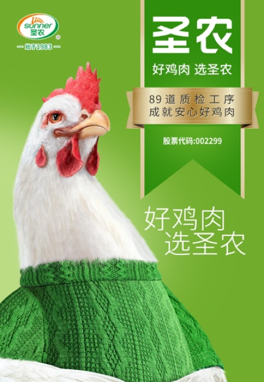

圣农集团是传统的农业产业链巨头，是一个典型的2B企业，在进军2C业务之前已经是百亿级体量。
在2020年决定启动第二曲线、打造2C品牌后，用了3年时间从0做到了30亿。
在未接触这个案例之前，我觉得它是靠2B的产业链优势做成的2C业务，没有什么技术含量。
在深入了解之后发现事实并非如此，2B企业发展2C业务有很多常见的障碍，例如忽视顾客视角、看不到最大的竞争优势所在、迷信靠渠道资源摆平竞争等等。
如果用一句话总结，就是2B企业的生长路线是同样的事情做得比别人更好，而2C业务需要做和别人不同的事情。
正如迈克尔波特所说，运营效益不等于战略，企业最容易犯的错误就是把运营效益的提升当作战略。
这不仅是一种思维方式的转变，也是企业经营理念的范式转变，它对企业的管理能力是巨大挑战。圣农企业的转型成功，对传统2B企业有很大的启发。
转型背景：实现稳定利润来源
圣农集团创始于1983年，是集自主育种、孵化、饲料加工、种肉鸡养殖、肉鸡加工、食品深加工、余料转化、产品销售、冷链物流于一体，横跨农牧产业、食品、冷链物流、投资、能源/环保、配套产业、兽药疫苗七大产业的全封闭白羽肉鸡全产业链集团。
2021年12月，由圣农自主培育的白羽肉鸡配套系“圣泽901”正式通过农业农村部审定认证，获可正式对外销售种源鸡的资格。
此举打破了我国白羽肉鸡种源完全依赖进口的局面，击碎了西方在这个行业长达百年的技术垄断，圣农成功进入“行业核心禁区”，填补了中国白羽肉鸡行业“无自主种鸡”的空白。
圣农转型的背景，是2B企业的利润受行业周期影响很大。例如圣农一年要消耗300万吨饲料，一吨饲料贵300块钱，就意味着增加9亿的成本。打造自有品牌，可以在很大程度上解决这个问题。
这也是国内所有2B企业的痛点，即使在生产制造端获得了领先优势，产业利润也没有掌握在自己手里。
对于那些掌握了生产制造核心技术的企业，利润还有所保障，如果没有核心生产技术，本质上就是别人的一个代工厂。生死存亡都没有掌握在自己手里。
对于此类现象，最知名的理论洞察就是“微笑曲线”：微笑曲线是宏碁集团创办人施振荣在1992年提出的理论：在整个IT产业上中下游，愈接近曲线上扬的两端，即左侧的零组件、核心技术与知识产权的延展，以及右端的品牌行销与服务等，所能够创造出来的附加价值也愈高，而微笑曲线下沉的中间地带，则代表了组装制造等附加价值最低的领域。
微笑曲线中间是制造，利润最低，全球制造也已供过于求。微笑曲线的左边是研发，右边是营销，利润最高。没有研发能力就只能做代工，赚一点辛苦钱；没有市场能力，再好的产品，产品周期过了也就只能作废品处理。
占据微笑曲线的两端，也是华为在中国企业里边做得最成功的地方。在华为的员工中，技术研究及开发人员占46%，市场营销和服务人员占33%，管理及其他人员占9%，其余的12%才是生产人员。
华为一直保持这样的比例，人力资源配置呈“研发和市场两边高”的“微笑曲线”。在巴菲特的护城河理论里，拥有技术和拥有顾客都是强大的护城河，也就是最大利润的来源。对圣农来说，已经在微笑曲线的左边击碎了西方在这个行业长达百年的技术垄断，接下来就是在右边打造有市场竞争力的品牌。
分析竞争：选择最大市场机会
圣农找到了XX战略咨询，这一点也是企业超过同行的地方。德鲁克认为，企业的成果在外部，企业的资源也在外部。因为顾客真正购买的是凝结在产品上的知识。
例如顾客购买一份快餐的时候，他真正购买的并不是构成快餐的米饭和鸡肉等原材料，而是购买了快餐企业经营者对经营快餐的知识，包括对供应商的选择、对员工的管理、对渠道的选择、对顾客需求的洞察等等。
是这些知识最终创造了顾客，所以经营知识才是企业成功的本质。更加重要的洞察是，知识作为企业的资源也存在于外部，这是企业要请外部咨询公司的根本原因。
XX专家给的第一个建议是分析竞争对手，选择最大市场机会。如果在企业内部看，圣农的竞争对手就是其他做品牌的同行，如泰森、凤祥、禾丰、民和等等。
但是XX专家经过调研和论证后认为，这些都不是圣农的竞争对手。这些品牌都只是在特定区域内有影响力，例如泰森只是在华东、民和在山东、禾丰在东北。并且影响力仅限于行业内，在顾客角度看还没有一个能够代言品类的品牌。
圣农真正的竞争对手，是整个鸡肉品类里没有品牌意识的杂牌。圣农作为行业内最大的鸡肉全产业链企业，它的主要任务并不是在区域市场和其他品牌抢夺顾客，而是在全国性市场范围内成为顾客的首选。
如果在圣农之前存在一个全国性的鸡肉品牌，那么圣农就要把它列为竞争对手。但是当整个市场不存在一个代表性品牌的时候，圣农就要成为这个品牌。
例如在花生油市场，鲁花成为品类代表之后，胡姬花的战略定位就是 “古法榨油”，力求和鲁花产生区隔。而对鲁花来说，它进入市场的时候就直接占据花生油的品类代表就可以了。
圣农在鸡肉品类的机会也是如此，所以XX专家给圣农的建议就是占据鸡肉品类第一，广告语是：好鸡肉，选圣农。
战略取舍：聚焦企业核心优势
只有一句广告语不可能创造顾客，重要的是根据战略定位进行取舍。
XX专家给的建议是砍掉所有不符合企业优势的业务，聚焦企业核心优势。被砍掉的业务有：已经有100多家门店的快餐业务；
分别都有几千万销量的鸡胸肉业务和牛肉业务。战略需要聚焦，聚焦意味着取舍。对任何一个组织来说，增加一个业务是容易的，舍弃一项业务是困难的。
XX专家说服企业的理由是：牛肉业务并不是圣农的优势所在，很难有比较显著的成果；鸡胸肉业务太小，适合创业型组织去做，不适合圣农这样有百亿体量的企业；快餐店业务虽然也是鸡肉产品，但是这类业务需要独特的运营知识，并不是圣农所具备的。
更为关键的是，圣农的客户里有肯德基和华莱士，这类业务做得太好的话就会威胁到客户的利益。所以市场体量有限。
而鸡肉类业务，或者准确点说鸡肉快消类业务，它的市场份额更大，更值得聚焦资源投入。对于非核心的业务，企业要适当缩减直至舍弃，对于核心业务，企业要聚焦资源全力出击。
在定位、产品、渠道、市场上选择适合自己的空位，并将这些空位进行协同管理，我们称之为侧翼战。侧翼战需要聚焦，聚焦资源才能保证战略定位的成功。
不管企业有多大的资源，面对市场机会的时候总是有限的。以有限的资源获取尽可能最大的成果，必由之路就是聚焦，就是打侧翼战。圣农要在核心战场上获胜，必要条件就是砍掉分散资源的非核心业务。
甚至我们可以这样认为：对最大机会的占领，就是由舍弃非核心机会的决定带来的。没有舍弃就没有聚焦，没有聚焦就没有战略的执行。事实上这也是所有组织获得战略成果的法则：哈弗汽车聚焦经济型SUV业务，代价是砍掉了已经投资30亿的家庭轿车业务；波司登在羽绒服品类上的成果，是它砍掉了非羽绒服的春季、夏季和秋季服装业务。
德鲁克认为，肥肉型的增长对企业是有害的，肌肉式的增长才是有效的增长。对圣农来说，连锁快餐和牛肉业务的增长就是肥肉式的增长。回归核心优势的增长才是肌肉式增长。
也就是说，企业的增量来自优势的放大，而不是业务项目的简单叠加。如果说在增量时代，企业的战略是做大做强，是尽可能地做大地盘。那么在这个存量搏杀的时代，企业的战略就要改为做强做大，做强在先做大在后。
超级战备：围绕战略打造爆款
企业打造爆款的必要性是毫无疑问的，爆款对内可以实现规模效应，降低运营成本，对外可以代言品牌、打通渠道。打造爆款是企业创造顾客的最有效、最具性价比的方式。
打造爆款的关键是找到产品空位、渠道空位、人群空位和市场空位，也就是前面提到的侧翼战。
各种新兴的潮流不断涌现，能把握这些趋势的红利是打造爆款的关键。例如瑜伽运动的涌现带动了瑜伽裤品牌，滑雪、登山、潜水等小众运动的涌现都会带动新品牌和爆款的出现。
同样需要关注的是渠道空位和人群空位。
例如东鹏特饮发现了红牛没有满足的空位：货车司机的补充能量的需求。东鹏特饮在制造业聚集的东莞市场、货车司机这个人群，提供大容量的能量饮料。
例如奶酪品牌百吉福没有发现顾客已经迁移到线上，还把资源聚焦在大卖场，妙可蓝多就填补了这个渠道空位，聚焦资源在电商渠道。
对圣农来说，这个新兴的渠道就是互联网。对于生活在一线城市的人来说，互联网早就不是新兴渠道的了，直播和社交电商才是。但是对于传统行业来说，这波红利还远远没有结束。XX专家在圣农已有的业务里挑选了脆皮炸鸡品类，建议在线上渠道打造脆皮炸鸡品类的爆款。
选择脆皮炸鸡品类，首先是基于企业优势的考虑，鸡肉类产品是圣农的优势所在；其次是基于顾客需求的考虑，脆皮炸鸡选择的是鸡肉后背的两块肉，口感较好；同时还有竞争层面的考虑，后被肉是圣农的客户（炸鸡快餐品牌）没有选择的部分，供应量充足。
如果选择鸡腿或鸡翅部分做爆款，就会有供应量不足的风险。因为圣农还要供应给炸鸡的客户。一个爆款背后，是对企业能力、竞争环境、顾客认知、产业链优势、渠道空位、市场空位和产品空位的综合考虑。
以圣农为例，为了在线上供应快速、新鲜的鸡肉类产品，圣农在全国建了5个前置工厂和90个前置仓，并围绕新业务建立了独立团队。在推出爆款产品之前，圣农在2020年打了一年的品牌形象广告，一年5000万广告投入。

战略定位分为内外两部分，内部是迈克尔波特式的定位，涉及到产业链分析、物理市场的竞争分析和运营取舍、聚焦。外部是特劳特式的定位，涉及到顾客认知分析、认识市场的竞争分析、品类趋势的演变。
打品牌广告的意义，是基于占据顾客认知的考虑。一个爆款本身并不能建立品牌的定位，只有在认知层面占据一个词才可以。
关键战役：聚焦资源占据第一
战略正确、战备做足，剩下的就是持续发起战役占据认知。圣农的成功战役至少有三个：推出潮流产品；签约头部主播；宣布销量领先。
2021年兴起了一波便捷烹饪的饮食潮流，尤其是空气炸锅这个新物种成为消费新宠。圣农的反应就是根据新潮流，打造适配空气炸锅的脆皮炸鸡产品。
具体表现就是圣农的脆皮炸鸡比市场上同类产品，用油量少40%，裹粉量少15%。并且不需要解冻，开袋就能直接油炸。
更健康更便捷的产品，首发3个月就成为爆品。2021年脆皮炸鸡销售额过亿元，2022年销售额突破2亿元。
第二个有效战役就是签约头部主播，2021年的直播电商是全民关注的热点。签约头部主播，就是在向所有人宣布行业地位。
这种做法简单、粗暴、有效。
宣布销量领先是圣农的第三个有效战役。你做到了第一，就要说出来，而且要大声地说出来。这是占据顾客认知的重要手段。
很多人对宣布销量领先不屑一顾，认为没有创意可言，无法建立品牌价值。甚至有人说从没见过哪个世界知名品牌宣布自己销量第一。
但如果你去了解一下世界知名品牌早期的策略，会发现它们也在宣布销量领先。余承东肯定也知道这点，所以他总在各类场合说华为技术遥遥领先。
圣农在C端的表现足够明显，从0到30亿只用了3年。
在产品端，圣农食品已打造出脆皮炸鸡、嘟嘟翅和香煎鸡胸肉3款年销售额过亿元大单品。新增霸气手枪腿、脆皮炸翅、台式盐酥鸡等多款年销售额超千万元新品。
在渠道端，圣农食品成为朴朴、抖音、天猫、永辉等重要电商平台的第一鸡肉品牌。
总之：
圣农食品是一个2B企业打造2C品牌的典型案例，在其3年30亿的成果里能看到很多亮点：
对竞争对手的准确判断、对业务取舍的清醒认识、对顾客认知的重视和对消费趋势的敏锐等等。
2B企业常常依赖制造能力，习惯低价取胜，喜欢在内部管理上降低成本来盈利。俗称“把干毛巾拧出水来”。事实证明这类做法已经到了极限，整个社会在同质化竞争的路线上已经不堪重负。
解决同质化竞争的办法就是打造品牌，打造品牌的心法就是以独具特色的运营活动在顾客认知中占据一个定位。圣农做了一个很好的示范。